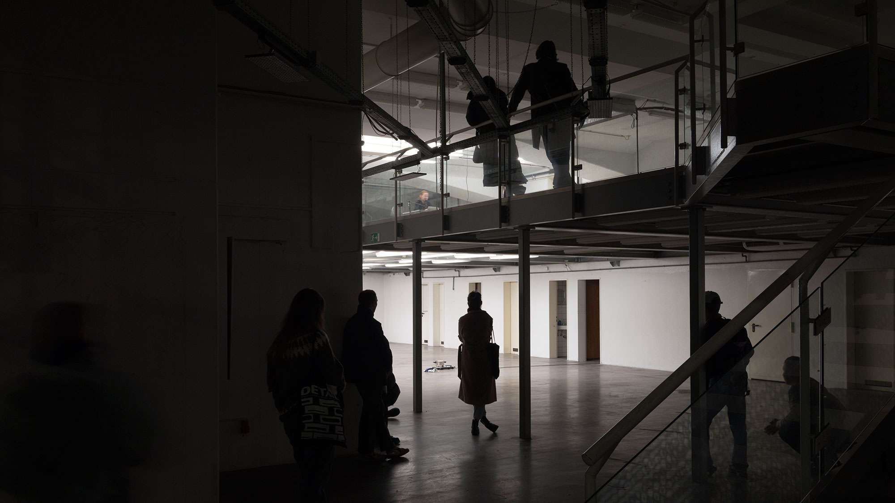

On February 9th 2023, Sarah Albrecht gave a performative reading.
The text Soll ich meines Bruders Hüter sein? (Shall I be my brother's keeper?) was read by her little sister Amy.
The reading was being accompanied by a multi-part installation.